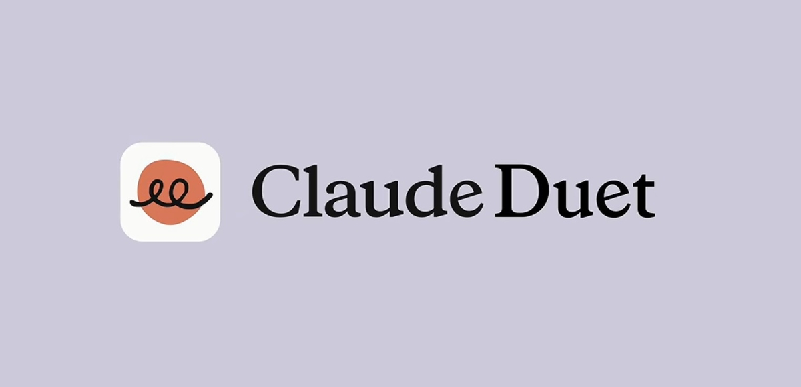

01 · GLOBAL
Anthropic Claude Duet
능동형 에이전트를 개인 업무의 다음 화면으로 열다
연합뉴스는 Anthropic이 Opus 5.5 기반 개인용 AI 에이전트 ‘Claude Duet’을 공개했다고 보도했다. 미국 유료 구독자에게 우선 제공되는 리서치 프리뷰로, 챗봇을 넘어 여러 단계를 수행하는 에이전트 경쟁이 일상 업무로 이동하는 신호다.
원문 보기 ↗ADDIT INSIGHT
에이전트 도입은 기능보다 실행 권한, 중단 조건, 결과 복구 경로를 먼저 설계해야 한다.